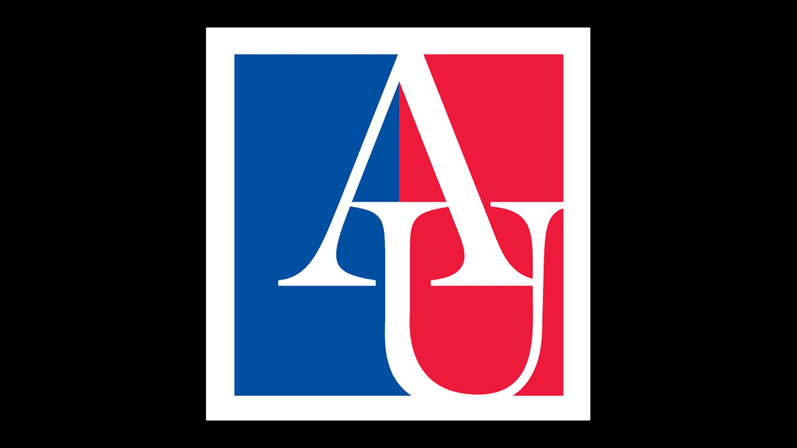

After Highschool
I will be attending American University in D.C. studying Business and Entertainment. In college I hope to meet new people, join clubs, study abroad and intern in the district.I’m really excited to be living in D.C., I love the culture and vibe D.C. has as well as the music, food, and tourist attractions.
After college I hope to continue to live in D.C. and find a job. I want to first start my career in news or sports. I want to be in the producer rooms and do behind the scenes work with cameras.

Skills
Work Experience
- Tech Goes Home, Cambridge — Teaching Assistant March 2024 - March 2024 Assisted elderly community members in understanding and using modern technology, including laptop navigation, application management, and troubleshooting common tech issues. Fostered a supportive learning environment, helping bridge generational gaps through effective communication and patience.
- Cambridge Housing Authority, Cambridge, MA — Human Resource Department Intern FEBRUARY 2024 - JUNE 2024 Assisting with recruitment processes Maintain and update HR records, ensuring accuracy and confidentiality Utilized HR software and tools to streamline administrative processes
- Central Square Business Improvement District, Cambridge, MA — Social Media Intern FEBRUARY 2025 - JUNE 2025 Produced and hosted a 4-part video series titled “Street Talk With: Aniyah,” featured on @centralsqbid’s Instagram, where I interviewed and engaged with members of the Cambridge community to spotlight local voices and stories Used video editing and design software to produce short-form videos
- Cambridge Mayor's Office, Cambridge, MA — Intern FEBRUARY 2025 - JUNE 2025 Utilized tech software to manage and organize important information efficiently Oversaw and regularly updated databases and records to ensure accuracy and relevance Communicated proactively with members of the Cambridge community to share updates and gather feedback